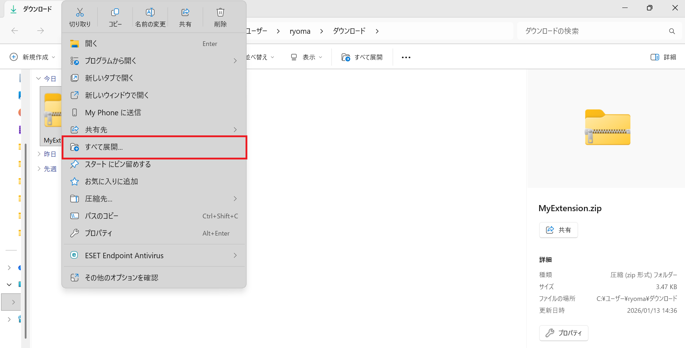
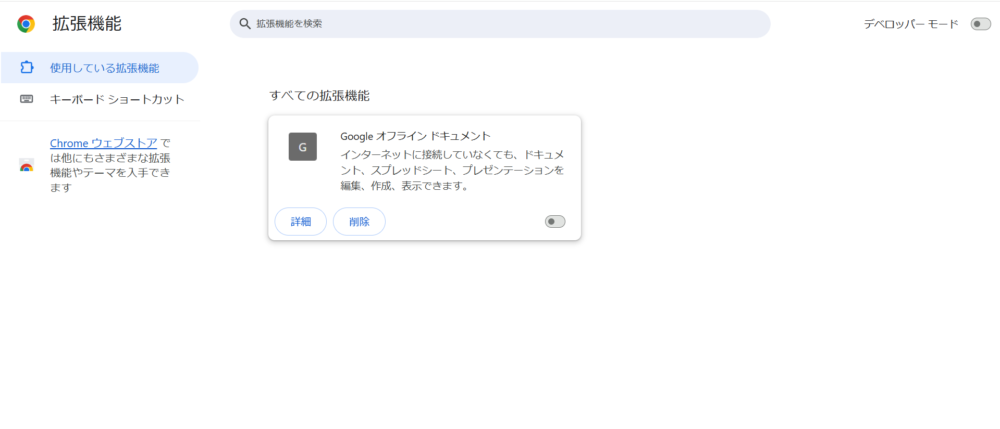
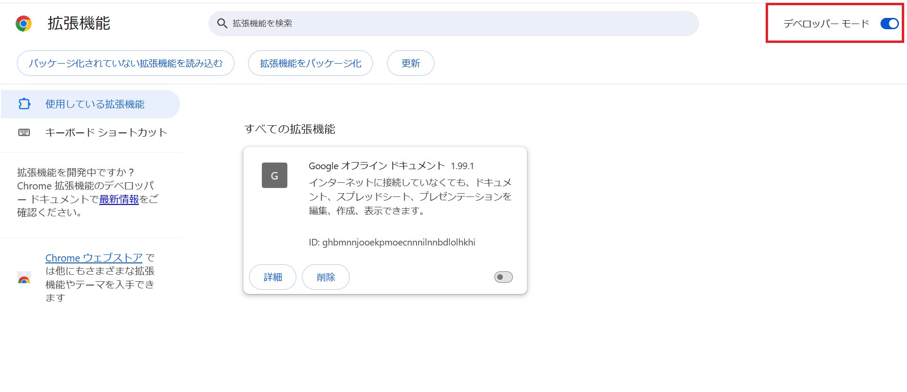
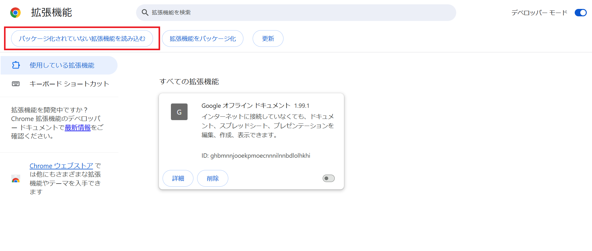

Chrome拡張機能 インストールガイド
このページでは、独自のChrome拡張機能を安全に導入する手順を写真付きで解説します。
まずは最新版の拡張ファイルをダウンロードしましょう
拡張機能をダウンロード (.zip)※保存先は「ダウンロード」フォルダになります
1
ZIPファイルを解凍する
ダウンロードした MyExtension.zip を右クリックして、「すべて展開」を選択し、ファイルを解凍します。

2
Chromeの管理画面を開く
ブラウザのアドレスバーに chrome://extensions/ と入力して Enter を押します。

3
デベロッパーモードをONにする
画面の右上にある「デベロッパー モード」のスイッチをクリックしてONにします。
※これがOFFのままだと、自作ツールを読み込むことができません。

4
フォルダを選択して読み込む
左上に表示された「展開済み形式の拡張機能を読み込む」ボタンをクリックし、手順1で解凍してできた「フォルダ」を選択してください。

🧪 実験用リンク（動作確認サイト）
拡張機能をインストール後、以下のサイトで「読みやすさ」の変化を確認してください。